Авіа-поїздка · 30 грудня 2026 – 8 січня 2027 · з Загреба і назад у Загреб
08:35 – 14:15 · Автобус FlixBus (маршрут 060) Загреб → Відень, квиток куплено. Відправлення: Загреб, автобусна станція, Avenija Marina Držića 4. Прибуття: Відень, Erdberg (VIB), Erdbergstraße 200A. Місця 20A, 20B, 20C, 20E.
~14:30 – ~15:05 · Метро U3 (оранжева лінія, напрямок Ottakring) від Wien Erdberg, поруч з автобусною станцією, до Schweglerstraße, без пересадок (~20 хв), далі ~6 хв пішки до хостелу.
з 15:00 до 00:00 · Заселення в BeFree Hostel - Self-Service, Beingasse 13 Ecke Goldschlagstraße, 1150 Wien, +43 699 19232769. Ночівля 29 → 30 грудня, виселення 30.12 до 11:00.
~16:00 – 17:45 · Technisches Museum Wien mit Österreichischer Mediathek, Mariahilfer Straße 212, 1140 Wien (Google Maps). Сьогодні (вт) відкрито 9:00–18:00; пн–пт 9–18, сб, нд і свята 10–18; 24.12 до 15:00; 25.12 і 31.12 зачинено. Дорослий 18 €, до 19 років безкоштовно, для родини 2 × 18 € = 36 €. Дані зі сторонніх джерел, перевірте на technischesmuseum.at.
Увечері · Купити їжу в дорогу на літак (переліт 30.12 триває 6 год 10 хв): у тарифі Lite харчування не включено, у літаку годувати не будуть.
Увечері · Купити квитки на потяг до аеропорту Відня (30.12) у мобільному застосунку ÖBB Tickets, він уже встановлений на телефоні. Вартість потяга й метро: розділ «Транспорт».
Вартість і тарифи автобуса та метро: розділ «Транспорт». Хостел: розділ «Проживання».
до 11:00 · Виселення з BeFree Hostel (Beingasse 13), виїзд з хостелу орієнтовно о ~09:45.
~09:45 – ~10:35 · Дорога до залізничного вокзалу Wien Hauptbahnhof: ~6 хв пішки до станції Schweglerstraße, метро U3 (напрямок Simmering) до Stephansplatz, пересадка на U1 (напрямок Oberlaa) до Hauptbahnhof.
~10:50 – ~11:10 · Потяг Railjet (або REX 7) Wien Hauptbahnhof → Flughafen Wien, ~15–20 хв у дорозі, відправлення приблизно кожні 30 хв (точний рейс перевірте на oebb.at).
до 11:30 · Бути в аеропорту Відня (VIE), за 2 години до вильоту.
13:30 – 22:40 · Переліт SalamAir OV812 Відень (VIE) → Маскат (MCT), прямий, 6 год 10 хв. Час прильоту місцевий (Маскат на 3 години попереду Відня).
після 22:40 · Таксі з аеропорту Маската до житла (~15 км). Після отримання багажу вийдіть у загальний зал прильоту й ідіть за вказівниками «Taxi» до офіційної стійки замовлення таксі (Airport Taxi), вона працює цілодобово. Автомобілі цієї служби біло-оранжеві або сучасні седани й мінівени з чітким написом «Airport Taxi».
Як замовити й заплатити: підійдіть до стійки й назвіть адресу готелю, вам озвучать орієнтовну вартість за нічним лічильником (посадка вночі 2,5 OMR плюс близько 0,3 OMR за кожен кілометр). Оплатити можна карткою на стійці або готівкою водієві наприкінці поїздки. Для 4 осіб на ~15 км це приблизно 6,5–7,5 OMR (близько 17–20 $). Адреса на ніч 30 → 31.12: Muscat Plaza Hotel, Al Alam Street, Al Khuwair.
Застосунок таксі Otaxi (Yango): застосунок уже встановлено, його потрібно активувати: залогінитись і прив'язати банківську картку. З Хорватії зробити це не вдалося, бо SMS із кодом не надійшло. Є шанс, що для входу доведеться купити картку (SIM) оманського мобільного оператора та отримати SMS уже в Омані. Спробуйте залогінитись одразу після прильоту, а до того скористайтеся стійкою Airport Taxi.
до 00:00 · Заселення в Muscat Plaza Hotel, Al Alam Street, Al Khuwair, 211 Muscat, +968 22041953. Ніч 30 → 31.12, сімейний номер, сніданок включено, виселення 31.12 до 12:00. Заселення можливе з 15:00 до 00:00, а прильот о 22:40: паспортний контроль, багаж і ~20 хв дороги можуть не вкластися в цей час, тому попередьте готель про пізній приїзд.
Вартість і тарифи дороги до аеропорту та таксі: розділ «Транспорт». Квитки на літак: розділ «Транспорт». Готель: розділ «Проживання».
З ранку · Йдемо купатися.
12:00 · Виселення з Muscat Plaza Hotel (Al Alam Street, Al Khuwair). Просимо рецепцію викликати таксі до Muscat Oasis Residences (Bowsher, Al Khuwair). Ціну краще уточнити в водія до початку поїздки. Відстань між готелями до 5 км, орієнтовно до 3,5 OMR ≈ 8,16 €.
12:30 · Заселення в Muscat Oasis Residences, Bowsher, Al Khuwair, Muscat, +968 24 582558. 8 ночей, виселення 08.01 12:00–13:00. Апартаменти з кухнею. Докладніше в розділі «Проживання».
14:00 · Йдемо в Oman Avenues Mall (Bawshar, Sultan Qaboos Street, +968 22 005400) і купуємо їжу на святкування Нового року, а також на 1 січня, бо супермаркети в цей день будуть зачинені. Супермаркет у моллі: гіпермаркет Lulu, а не Carrefour.
Години роботи Oman Avenues Mall: крамниці в четвер 31.12 10:00–23:00 (чотири сайти; Time Out і Apple Maps дають 10:00–01:00); гіпермаркет Lulu щодня 08:00–23:45 (два джерела). У п'ятницю 01.01 і суботу 02.01 крамниці теж 10:00–23:00 (за деякими джерелами до півночі). Святкові години 31.12 і 01.01 не підтверджено, зателефонуйте в мол. Спосіб дороги до мола ще не обрано, у витрати вона не включена.
Ввечері · Святкуємо Новий рік.
Вартість таксі: розділ «Транспорт». Житло: розділ «Проживання».
Вдень · Йдемо пішки з Muscat Oasis Residences на море, купаємось.
Після купання · Йдемо пішки назад в апартаменти. Їжа на 1 січня куплена 31.12.
Місце купання, час виходу і відстань ще не вказано. Транспорт не потрібен, у витрати нічого не додано.
08:30 · Вихід з Muscat Oasis Residences (Bowsher, Al Khuwair) пішки до Великої мечеті Султана Кабуса, 2,2 км.
09:00 – 10:00 · Відвідування Великої мечеті Султана Кабуса (Sultan Qaboos Grand Mosque) всередині, близько години. Для відвідувачів мечеть відкрита з 8:30 до 11:00, з суботи по четвер, у п'ятницю закрита; 2 січня 2027 року це субота, тож мечеть відкрита. У неробочий час її можна оглянути зовні.
Вхід безкоштовний. Потрібен скромний одяг; жінкам треба мати з собою хустку для покриття голови. Оренда абаї та хустки коштує близько 2,5 OMR.
~10:00 – ~10:40 · Йдемо пішки від мечеті в Mall of Oman (район Bawshar), 3 км, ~40 хв у дорозі. Мол у суботу працює з 10:00 до 22:00, гіпермаркет Carrefour у моллі 09:00–24:00 (за офіційною сторінкою Experience Oman і Carrefour Oman).
~10:40 – ~14:40 · Шопінг у моллі близько 4 годин, купуємо продукти.
~14:40 – ~14:55 · Йдемо пішки назад у Muscat Oasis Residences, 1,1 км, ~15 хв у дорозі. Повертаємось в апартаменти близько 15:00. Інших планів на цей день немає.
Час у дорозі розраховано за швидкістю ~4,5 км/год (з дітьми). Транспорт не потрібен, у витрати нічого не додано. Святкові години мола можуть відрізнятися, перед виходом перевірте.
09:00 · Виїзд на таксі з Muscat Oasis Residences (Bowsher, Al Khuwair) до National Museum of Oman (Old Muscat), 23,2 км, у дорозі ~30 хв. Приїздимо близько 09:30, а музей відкривається о 10:00, тож ~30 хв можна погуляти біля входу.
10:00 – 11:00 · Національний музей Оману (The National Museum – Sultanate of Oman), близько 1 години. Час роботи на 3 січня (неділя): з 10:00 до 17:00, останній квиток о 16:30 (за сторонніми джерелами: з суботи по четвер 10:00–17:00, у п'ятницю 14:00–18:00). Вхід: дорослий 5 OMR, діти 6–12 років 2 OMR; у розрахунку 2 × 5 + 2 (10 років) + 5 (13 років) = 17 OMR ≈ 39,61 €.
11:00 – ~12:00 · Йдемо пішки набережною Мутрах (Mutrah Corniche) до Мутрах-суку, 3,9 км, ~50 хв ходу плюс короткі зупинки.
~12:00 – ~14:00 · Мутрах-сук (Mutrah Souq), близько 2 годин. Тут шукаємо покупки з пункту «Купити в Омані» (магніт, шафран, чай, кава, кальян, кавник далла). Годин роботи в неділю офіційно не знайшов, джерела розходяться: або 08:00–13:30 і 16:00–22:00, або лише 16:00–22:00. Тож у цей час частина крамниць може бути зачинена; перед виходом з музею перевірте години на місці.
~14:00 · Таксі від Мутрах-суку назад у Muscat Oasis Residences, 22,6 км, ~30 хв. Повертаємось близько 14:30. Обід: у суку чи на набережній, або вдома; їжа в бюджеті «Харчування».
Ціну таксі розраховано за неофіційним тарифом: 2 OMR + 0,3 OMR за км; у реальності може бути більше, особливо біля суку, тому уточніть ціну до поїздки або замовляйте через Otaxi (Yango). Час пішки ~4,5 км/год (з дітьми). Ціни й години музею з сторонніх джерел (Audiala), звірте на nm.gov.om. Витрати: розділ «Витрати».
Хто летить: тільки один дорослий. Родина (ще 1 дорослий і 2 дітей) лишається в Muscat Oasis Residences; програму для них на цей день ще не заплановано.
~06:15 · Таксі з Muscat Oasis Residences до аеропорту Маската (~15 км), 6,5–7,5 OMR (ціна за машину, не за людину). До реєстрації на рейс лишається близько 2 годин, бо виліт о 08:50. Беріть паспорт, підтвердження готелю й зворотного квитка Маскат → Відень (OV811, 08.01).
08:50 – 09:30 · Переліт Маскат (MCT) → Доха (DOH), Oman Air / Qatar Airways, прямий, 1 год 40 хв (час місцевий: Катар на 1 годину позаду Оману). Квиток 111 €.
09:30 – ~10:30 · Паспортний контроль і вихід з аеропорту Hamad (DOH). За більшістю джерел українцям віза не потрібна (безвіз або віза по прильоту), але джерела розходяться щодо терміну й збору, тож звірте умови на офіційному сайті МЗС Катару до поїздки.
09:30 – ~10:30 · Паспортний контроль і вихід з аеропорту Hamad (DOH). За більшістю джерел українцям віза не потрібна (безвіз або віза по прильоту), але джерела розходяться щодо терміну й збору, тож звірте умови на офіційному сайті МЗС Катару до поїздки.
~10:30 – 11:30 · З аеропорту одразу їдете в музей: метро (Red Line) до станції Msheireb, далі пішки до Museum of Islamic Art. Квиток Standard 2 QAR за поїздку, добовий 6 QAR; у розрахунку добовий квиток 6 QAR ≈ 1,48 € на одну людину.
11:30 – 13:00 · Музей ісламського мистецтва (Museum of Islamic Art, MIA), 1,5 години. У понеділок за сторонніми джерелами працює з 9:00 до 19:00. Вхід для нерезидентів: дорослий 50 QAR, діти до 16 років безкоштовно; для вас 1 дорослий × 50 QAR ≈ 12,31 €.
13:00 – 14:00 · Пішки (~20 хв) до National Museum of Qatar, у музеї близько 40 хв. Вхід 25 QAR (≈ 6,15 €) для дорослого.
14:00 – 15:00 · Метро до станції Katara, дорога близько 1 години.
15:00 – 16:00 · Katara Cultural Village, прогулянка близько 1 години.
Якщо буде час · Проїхати ще на 1 зупинку метро далі, погуляти островами (штучні острови) і пофоткати їх; точну станцію й час на дорогу перевірте за схемою метро.
16:00 – 17:00 · Повернення в центр на метро.
17:00 – ~19:00 · Souq Waqif: вечеря (їжа в бюджеті «Харчування») і прогулянка.
~19:00 – ~19:45 · Метро назад в аеропорт Hamad (звірте, що метро ще працює; якщо ні, візьміть таксі).
21:50 – 00:20 (+1) · Переліт Доха (DOH) → Маскат (MCT), Oman Air / Qatar Airways, прямий, 1 год 30 хв. Квиток 111 €. Приліт о 00:20 вже 5 січня.
~00:50 – ~01:20 · Таксі з аеропорту Маската до апартаментів (~15 км), 6,5–7,5 OMR. Додому потрапите близько 01:00, тож 5 січня краще почати пізно.
Ціни на квиток: найдешевші прямі рейси на 4 січня за Google Flights, для 1 дорослого; рейси Oman Air і Qatar Airways схожі на кодшеринг, тож перед покупкою уточніть, хто виконує рейс. Детальне порівняння: план перельотів «Маскат: Кувейт, Бахрейн, Доха». Транспорт: розділ «Транспорт», витрати: розділ «Витрати». Квитки ще не куплено. Інші пам'ятки Дохи: 20 пам'яток Дохи, які варто побачити.
Вдень · Купаємось і відвідуємо торгові центри. Конкретні місця, час і транспорт ще не обрано.
Ніч з 4 на 5 січня ви повертаєтесь із Дохи близько 01:00, тож день краще почати пізно.
Хто їде: уся родина (2 дорослих і 2 дітей), одне орендоване таксі на день туди й назад за 200 €. Усі часи нижче орієнтовні, їх варто узгодити з водієм.
~08:00 – ~09:45 · Виїзд з Muscat Oasis Residences до міста Нізва (Nizwa). Дорога в один бік займає орієнтовно 1,5–2 години.
~10:00 – ~11:30 · Форт Нізва (Nizwa Fort), головна пам'ятка міста, близько 1,5 години. Вхід для іноземців: дорослий ~5 OMR, дитина 6–12 років ~3 OMR; для нас 2 дорослих по 5 OMR + дитина 10 років 3 OMR + дитина 13 років 5 OMR (за віковою межею 6–12 років її рахуємо як дорослу) = 18 OMR ≈ 41,94 €. Години роботи в розрахунок не включено, звірте їх перед поїздкою.
~11:30 – ~13:30 · Ринок (сук) Нізви, поруч із фортом: сувеніри, срібло, ремесла, фініки, спеції. Тут же можна пообідати (їжа в бюджеті «Харчування»).
~13:30 – ~15:30 · Повернення таксі в Muscat Oasis Residences.
Нізва, 6 січня 2027 року припадає на середу. Відомий тваринний ринок (худоба, кози) за загальною інформацією проходить лише в п'ятницю зранку, тож у середу його не буде; перевірте на місці. Таксі: розділ «Транспорт», вартість: розділ «Витрати».
Вдень · Відвідуємо Королівський оперний театр Маскат (Royal Opera House Muscat). Як їхати, вирішимо на місці; час, години відвідування й вартість входу ще не перевірено і в розрахунок не включені.
12:00 – 13:00 · Виселення з Muscat Oasis Residences (Bowsher, Al Khuwair). Спосіб дороги з готелю в аеропорт Маската ще не обрано.
до ~15:55 · Бути в аеропорту Маската (MCT), за 2 години до вильоту.
17:55 – 22:00 · Переліт SalamAir OV811 Маскат (MCT) → Відень (VIE), прямий, ~6 год 05 хв. Час прильоту місцевий (Відень на 3 години позаду Маската). У тарифі Lite харчування не включено, їжу на літак купіть заздалегідь.
22:00 – ~22:40 · Прильот у Відень: вихід з літака, паспортний контроль і вихід з аеропорту ~30–40 хв, бо тільки ручна кладь, багаж не здаємо.
Варіант 1 · таксі або Bolt (основний при затримці) · від виходу з аеропорту прямо до VIB Erdberg (Erdbergstraße 200A), ~25 хв. Якщо літак сів вчасно, на зупинці ~23:00–23:05, до автобуса ~2 год 35 хв. Якщо запізнився на 2 години (посадка 00:00), на зупинці ~01:00–01:10, до автобуса 30–40 хв. Максимальна вартість 45 € за 4 осіб.
Варіант 2 · потяг і метро (дешевше, якщо затримка невелика) · Railjet або REX 7 з аеропорту до Wien Hauptbahnhof (~15–20 хв, відправлення приблизно кожні 30 хв), метро U1 до Stephansplatz, пересадка на U3 до Erdberg; разом ~1 год 25 хв – 1 год 50 хв від виходу з аеропорту. Якщо літак сів вчасно, на зупинці ~00:10–00:25, до автобуса ~1 год 15 хв. Якщо запізнився на 2 години, на зупинці ~02:00–02:25, автобус 01:40 уже поїде, лишається 04:00. Вартість ~25,60 €. Цей варіант підходить, якщо літак сів не пізніше ~23:00 (затримка до ~1 год), інакше одразу беріть таксі.
01:40 – 06:30 · Автобус FlixBus Відень, Erdberg (VIB) → Загреб, автобусна станція, прямий, 4 год 50 хв (найшвидший рейс); квитки будемо купувати на цей рейс (24,49 € з особи + 0,99 € сервісний збір, ~98,95 € за 4 пасажирів). Запасний автобус о 04:00. Час відправлення 23:10 не розглядаємо: його можна встигнути лише при посадці рівно за розкладом, і то на межі.
Вартість і розрахунок дороги з аеропорту Відня, а також автобуса: розділ «Транспорт». Час відправлення автобуса 01:40, прибуття 06:30 і ціну взято зі сторінки бронювання FlixBus; автобус 04:00 взято з агрегатора за грудень 2025, перевірте на flixbus.com.
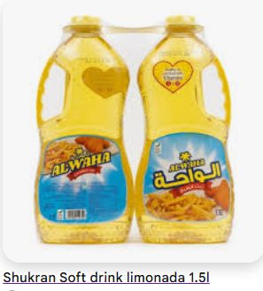
Shukran Soft drink limonada, 1,5 л.
Classic Malt · класичний безалкогольний солодовий напій з насиченим солодовим смаком.
Fruit Malt · безалкогольний солодовий напій з фруктовим відтінком (який саме фрукт, не вказано).
Обидва в скляних пляшках з кронен-корком, розраховані на ринок Оману й країн Перської затоки (GCC). Об'єм не вказаний. На сторінці виробника зазначено, що баланс смаку, солодкості й газації ще допрацьовують, тож у продажу напій може бути ще не скрізь. Джерело: soharfoodbev.com.
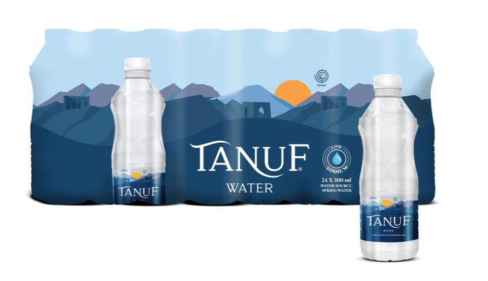
Tanuf · головний національний бренд напоїв Оману. Етикетка з назвою оманського джерела (Tanuf), на пляшці низький вміст натрію («Low sodium»), джерело: Spring Water. Скляна пляшка 330 мл або 750 мл має виразну паперову етикетку й часто рельєфне тиснення. На фото пластикові пляшки 0,5 л (упаковка 24 × 500 мл), скляну версію шукайте окремо.
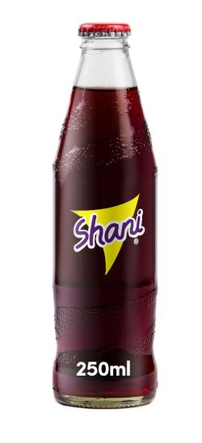
Shani (250 мл) · культовий для регіону темно-червоний ягідний газований напій оманського розливу, випускається в класичних скляних пляшках «пивного» формату 0,25–0,33 л. На контретикетці вказано виробника: Oman Refreshment Company, Muscat, Sultanate of Oman.
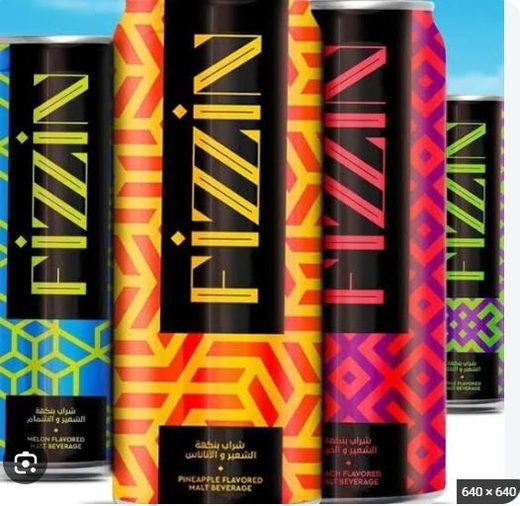
Fizzin (компанія Al Kawther Water Treatment) · один із небагатьох безалкогольних солодових напоїв, який розливають безпосередньо в Досі. Бляшанки з різними смаками (за фото: диня, ананас, персик, яблуко; також класичний солод), маркування Alcohol-Free Malt Beverage.
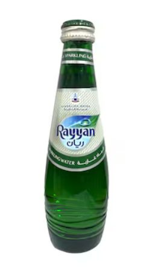
Rayyan · найвідоміша катарська природна вода, яку видобувають із підземних джерел на півночі країни. На фото скляна пляшка газованої води (Sparkling Water) із зеленим склом і білою етикеткою.
Правила щодо алкоголю в Катарі перед поїздкою звірте за офіційними джерелами; тут шукаємо безалкогольні варіанти.
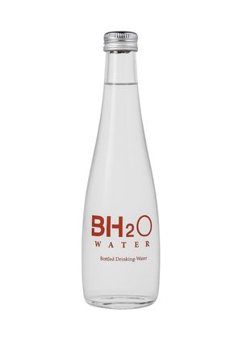
BH2O Drinking Water (330 мл) · випускається бахрейнською компанією Global Water Bottling Company у скляних та пластикових пляшках. На скляній версії (на фото) напис нанесений фарбою безпосередньо на скло (шовкотрафарет), тож для альбому краще взяти пластикову версію зі звичайною етикеткою або випуск до Гран-прі Формули-1 у Бахрейні.
Selsabil · один із найвідоміших місцевих брендів води від компанії Bahrain Water Bottling & Beverages Company. Яскрава етикетка з арабським та англійським текстом і прямим зазначенням виробництва в Королівстві Бахрейн. На фото пляшка 1,5 л.
Пункт актуальний, лише якщо оберете Бахрейн для поїздки з Оману.
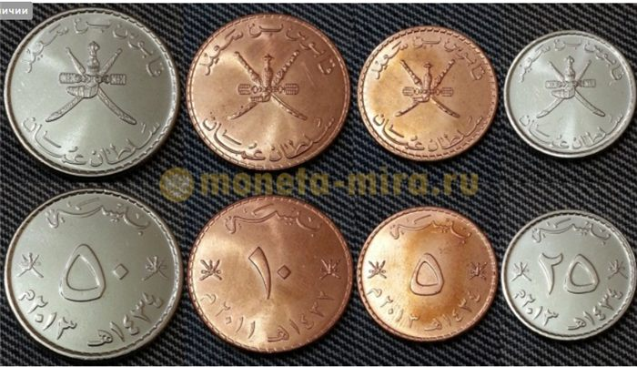
Монети в обігу: 5, 10, 25 і 50 байс (найчастіше трапляються 25 і 50).
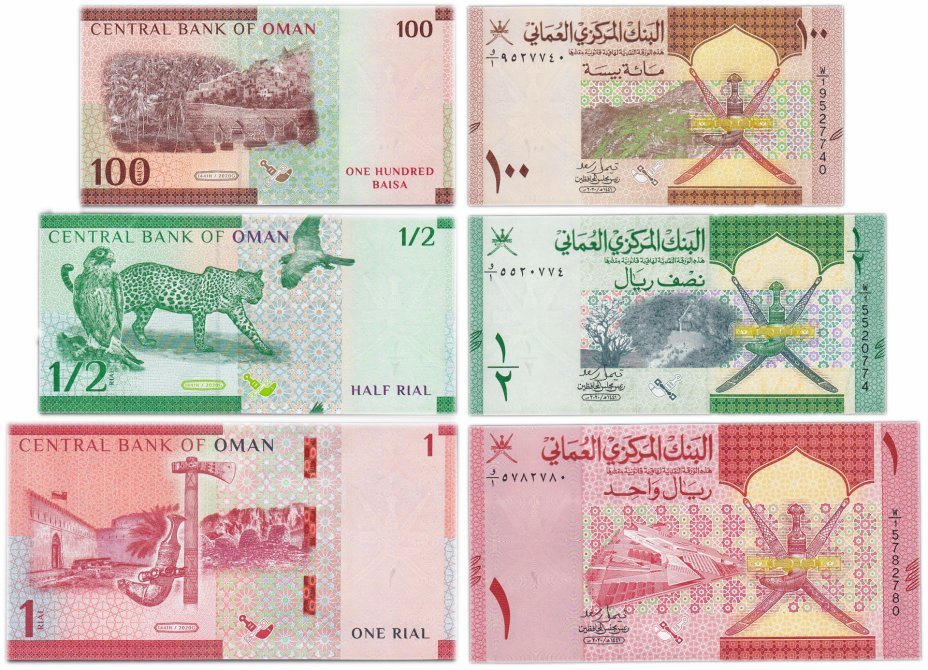
Банкноти 100 байс, ½ ріала і 1 ріал · звичайні банкноти серії 2020 року (аверс і реверс).
Банкноти в обігу: 100 байс, ½, 1, 5, 10, 20 і 50 ріалів. Ювілейні випуски не рахуємо.
Фото банкнот: monetnik.ru.
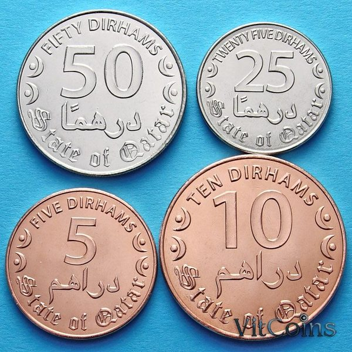
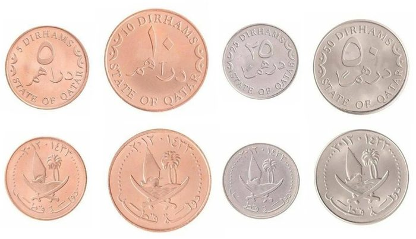
Монети в обігу: 5, 10, 25 і 50 дирхамів (1 ріал = 100 дирхамів). Банкноти: від 1 до 500 ріалів.
Отримати монети можна здачею в метро, музеях чи на Souq Waqif; для цього треба хоча б раз заплатити готівкою. Фото: vitcoins (набір 2016 року) та продавець набору монет.
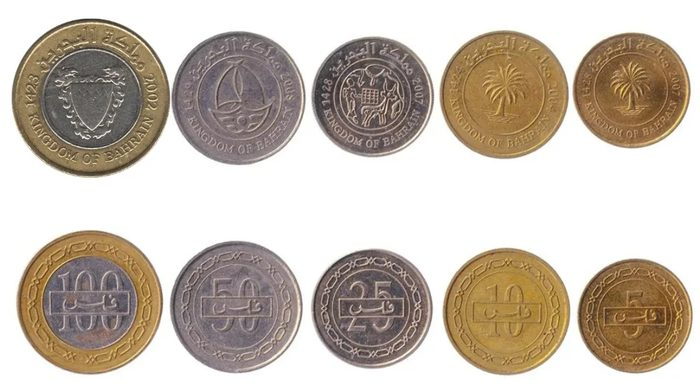
Монети на фото: 100, 50, 25, 10 і 5 філсів (1 динар = 1000 філсів). Також згадується монета 500 філсів, її на фото немає, наявність у обігу не перевіряв. Банкноти: ½, 1, 5, 10 і 20 динарів.
Пункт актуальний, лише якщо оберете Бахрейн для поїздки з Оману; монети можна отримати здачею.
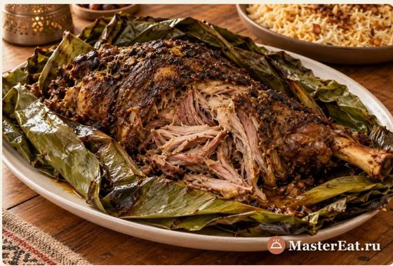
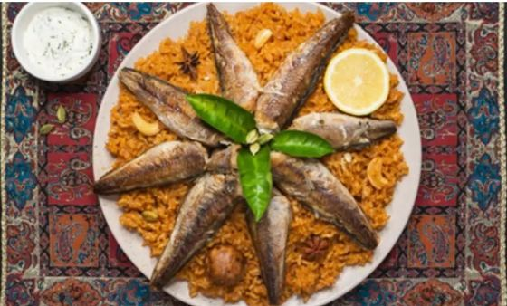
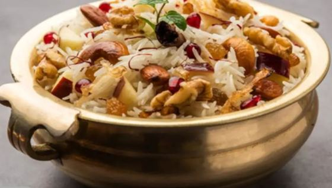
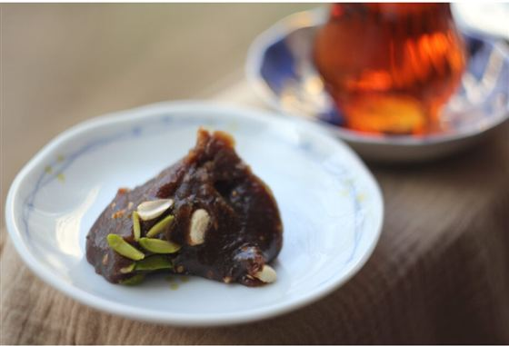
Фото страв додано вручну (з файлів користувача), фото халви теж. Джерело статті: FUN&SUN, Топ-5 блюд, которые стоит пробовать в Омане.
| Регіон | Техніка | Риси й колір | Головні вироби |
|---|---|---|---|
| Бахла (центр) | гончарний круг | гладка теракота, зелена мідна полива, стримане різьблення | глечики для води (джихаль), великі глеки (хурос) |
| Дофар (південь) | ручне ліплення з пластів | кутасті форми, яскравий багатоколірний розпис | квадратні курильниці (маджмар), лощені глеки |
| Мусандам (північ) | ручне ліплення, повільний круг | малий формат, пурпурово-темний черепок | ярусні курильниці, малі посудини для спецій і олії |
| Аль-Батіна (узбережжя) | гончарний круг | перські силуети, густа коричнева полива або золотистий декор | транспортні глеки (мартабан), кубки, кавники (далла) |
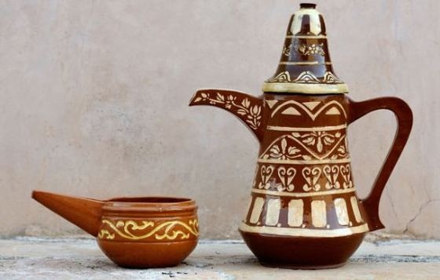
Створено з глини: глиняний кавник-глечик з кришкою, вкритий коричневою поливою з білим орнаментом, і мала посудина з ручкою.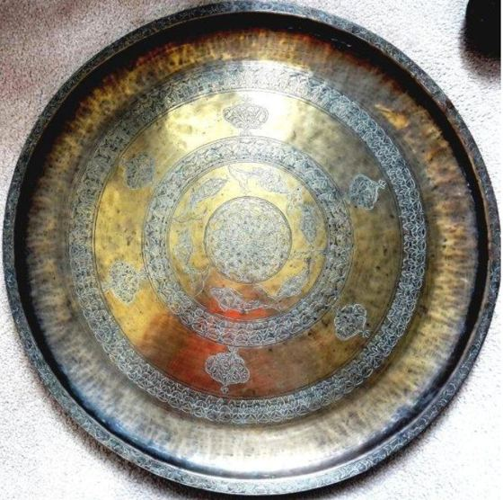
Створено з металу (схоже на латунь або мідь): велика таріль сінія з гравіруванням і чеканкою концентричними візерунками.| Рейс | Дата | Виліт | Приліт | Час у повітрі | Пересадки | Тариф |
|---|---|---|---|---|---|---|
| OV812 Відень → Маскат | середа, 30.12.2026 | 13:30 · Відень (VIE) | 22:40 · Маскат (MCT) | 6 год 10 хв | прямий | Lite |
| OV811 Маскат → Відень | п'ятниця, 08.01.2027 | 17:55 · Маскат (MCT) | 22:00 · Відень (VIE) | 7 год 5 хв | прямий | Lite |
Час місцевий для кожного аеропорту: Маскат на 3 години попереду Відня й Загреба (UTC+4 проти UTC+1). Перевізник SalamAir, бронювання від 09.11.2026.
| Пасажир | Тариф | Ручна поклажа | Зареєстрований багаж, OV812 (30.12) | Зареєстрований багаж, OV811 (08.01) | Місце | Харчування |
|---|---|---|---|---|---|---|
| Дорослий 1 | дорослий, Lite | 5 кг під сидіння | 1 місце 10 кг (куплено) | 1 місце 10 кг (куплено) | не обрано | не включено |
| Дорослий 2 | дорослий, Lite | 5 кг під сидіння | 1 місце 10 кг (куплено) | 1 місце 10 кг (куплено) | не обрано | не включено |
| Дитина 1 | дорослий тариф, Lite | 5 кг під сидіння | немає | немає | не обрано | не включено |
| Дитина 2 | дитячий тариф, Lite | 5 кг під сидіння | немає | немає | не обрано | не включено |
Разом зареєстрованого багажу: 2 місця по 10 кг на кожен рейс (20 кг на сім'ю), решта пасажирів літає лише з ручною поклажею 5 кг. Додатковий багаж 10 кг коштував 45,18 € за місце на рейс; суми дивіться нижче в цьому розділі.
| Стаття | Розрахунок | Сума |
|---|---|---|
| OV812, 30.12 | 4 пасажири × 218,02 € (тариф 171,80 + збір пасажира 23,47 + безпека Австрії 12,00 + безпека AT 10,75) | 872,08 € |
| OV811, 08.01 | 4 пасажири × 326,21 € (тариф 295,94 + аеропорт Оману 22,59 + безпека 2,26 + інфраструктурний збір 4,97 + додатковий збір 0,45) | 1 304,84 € |
| Додатковий багаж 10 кг, OV812 | дорослий 1: 45,18 € + адмін-збір 18,07 €; дорослий 2: 45,18 € | 108,43 € |
| Додатковий багаж 10 кг, OV811 | дорослий 1: 45,18 €; дорослий 2: 45,18 € | 90,36 € |
| Разом у підтвердженні | квитки 2 176,92 € + багаж 198,79 € | 2 375,71 € |
| Фактично сплачено | за вашими даними, на 104,29 € більше за підтвердження | 2 480 € |
| Дата | вівторок, 29.12.2026 |
| Перевізник і рейс | FlixBus (оператор: концесіонер FlixBus DACH GmbH), маршрут 060, напряму |
| Відправлення | 08:35 · Загреб, автобусна станція, Avenija Marina Držića 4, 10000 Zagreb |
| Прибуття | 14:15 · Відень, Erdberg (VIB), Erdbergstraße 200A, 1030 Wien |
| Час у дорозі | 5 год 40 хв |
| Пасажири і місця | 4 пасажири (2 дорослих, 2 дітей): 20A, 20B, 20C, 20E |
| Багаж | на кожного пасажира: мала ручна поклажа (7 кг, 42×30×18 см) і туристичний багаж (20 кг, 80×50×30 см) |
| Документи | дійсні посвідчення особи або паспорти; можливі прикордонні й візові перевірки |
| Вартість | 140,95 € за 4 пасажирів, квиток куплено |
| Дата | 29.12.2026, після прибуття автобуса (14:15) |
| Маршрут | лінія U3 (оранжева), напрямок Ottakring: від станції Wien Erdberg до станції Schweglerstraße, без пересадок |
| Посадка | Wien Erdberg, поруч з автобусною станцією Erdberg (VIB) |
| Вихід | Schweglerstraße, далі пішки до BeFree Hostel (Beingasse 13, 1150 Wien), орієнтовно 6 хв |
| Час у дорозі | орієнтовно 20 хв, без урахування пішої частини |
| Квиток | на одну поїздку: 2 дорослих по 3 € (онлайн) + 2 дитячих пільгових по 1,50 € (діти 10 і 13 років); в автоматі дорожче (дорослий 3,20 €). Тарифи Wiener Linien на 2026 рік; купити можна в застосунку WienMobil |
| Вартість | 9 € за 4 пасажирів |
| Дата | середа, 30.12.2026: виселення до 11:00, бути в аеропорту до 11:30 (виліт OV812 о 13:30) |
| Маршрут | пішки ~6 хв від BeFree Hostel до станції Schweglerstraße; метро U3 (напрямок Simmering) до Stephansplatz; пересадка на U1 (напрямок Oberlaa) до Wien Hauptbahnhof; потяг Railjet або REX 7 до Flughafen Wien |
| Орієнтовний графік | виїзд з хостелу ~09:45, на Wien Hauptbahnhof ~10:35, потяг ~10:50–11:00 (в дорозі ~15–20 хв, відправлення приблизно кожні 30 хв), в аеропорту ~11:10–11:20; запас часу до 11:30 невеликий, тож за можливості виїжджайте раніше |
| Метро (U3 + U1) | 2 дорослих по 3 € + 2 дитячих по 1,50 € (діти 10 і 13 років) = 9 €; тарифи Wiener Linien на 2026 рік |
| Потяг до аеропорту | ÖBB Railjet/REX 7, Hauptbahnhof → Flughafen Wien: дорослий 5,50 €, діти 6–14 років 2,80 €; 2 × 5,50 € + 2 × 2,80 € = 16,60 € |
| Вартість | 25,60 € за 4 пасажирів (метро 9 € + потяг 16,60 €) |
Квиток ÖBB до аеропорту може не включати проїзд метро, тому метро враховано окремо. Перед поїздкою перевірте тарифи й розклад на oebb.at та wienerlinien.at. Через ремонт колії S7 до жовтня 2027 року не доходить до Wien Mitte, тому потяг з Hauptbahnhof зручніший.
| Рейс | Виліт | Приліт | Час у повітрі | Пересадки | Ціна |
|---|---|---|---|---|---|
| Маскат → Доха понеділок, 04.01.2027 | 08:50 · Маскат (MCT) | 09:30 · Доха (DOH) | 1 год 40 хв | прямий | 111 € за особу |
| Доха → Маскат 04.01.2027, приліт 05.01 | 21:50 · Доха (DOH) | 00:20 (+1) · Маскат (MCT) | 1 год 30 хв | прямий | 111 € за особу |
| Авіакомпанія | Oman Air / Qatar Airways (кодшеринг, у Google позначено двома компаніями); перед покупкою уточніть, хто виконує рейс |
| Вартість | 111 € + 111 € = 222 € за 1 дорослого; квиток туди-назад на ті самі години може вийти дешевше, від 213 € |
| Пасажири | летить тільки 1 дорослий, родина лишається в Омані |
| Дорога в аеропорт Маската і назад | таксі близько 15 км, 6,5–7,5 OMR за машину, для розрахунку 7 OMR ≈ 16,30 € в кожен бік; разом ≈ 32,60 € |
Час місцевий: Катар (UTC+3) на 1 годину позаду Оману (UTC+4). Інші рейси на 4 січня: план перельотів.
| Дата | понеділок, 04.01.2027, після прильоту о 09:30 |
| Маршрут | Red Line: аеропорт Hamad → Msheireb (далі пішки до Museum of Islamic Art); Msheireb → Katara; за наявності часу ще 1 зупинка далі до островів; назад у центр до Souq Waqif; ввечері назад в аеропорт Hamad. Пересадки й точні станції звірте за схемою метро |
| Квиток | Standard: 2 QAR за поїздку, добовий 6 QAR; при 5 поїздках добовий вигідніший, тому в розрахунку добовий квиток |
| Вартість | 6 QAR на 1 людину ≈ 1,48 € за курсом 1 QAR ≈ 0,246 € |
| Пасажири | їде тільки 1 дорослий, родина лишається в Омані |
Перед поїздкою звірте, що метро працює ввечері, коли ви їдете в аеропорт (виліт 21:50); якщо ні, візьміть таксі. Програма дня: День 6.
| Дата | середа, 30.12.2026, після прильоту о 22:40 і отримання багажу |
| Де шукати | у загальному залі прильоту йдіть за вказівниками «Taxi» до офіційної стійки Airport Taxi; стійка працює цілодобово |
| Як виглядають авто | біло-оранжеві або сучасні седани й мінівени з чітким написом «Airport Taxi» |
| Як замовити | назвіть на стійці адресу готелю, вам озвучать орієнтовну вартість за нічним лічильником |
| Тариф | посадка вночі 2,5 OMR плюс близько 0,3 OMR за кожен кілометр |
| Оплата | карткою на стійці або готівкою водієві наприкінці поїздки |
| Вартість | для 4 осіб на ~15 км приблизно 6,5–7,5 OMR (близько 17–20 $); у витратах враховано 7 OMR ≈ 16,30 € за курсом 1 OMR ≈ 2,33 € |
| Дата | четвер, 31.12.2026, після виселення з Muscat Plaza Hotel о 12:00 |
| Маршрут | Muscat Plaza Hotel (Al Alam Street, Al Khuwair) → Muscat Oasis Residences (Bowsher, Al Khuwair), заселення з 12:30 |
| Як замовити | просимо рецепцію готелю викликати таксі; запасний варіант: застосунок Otaxi (Yango), якщо його вдасться активувати |
| Тариф | за неофіційним калькулятором початкова плата 2 OMR плюс 0,3 OMR за кілометр; у готельного таксі ціна може бути вищою, тому уточніть її до поїздки |
| Вартість | відстань між готелями до 5 км: 2 + 5 × 0,3 = 3,5 OMR ≈ 8,16 € за курсом 1 OMR ≈ 2,33 € (максимум для 4 осіб) |
Дорогу до Oman Avenues Mall 31.12 о 14:00 у розрахунок не включено, спосіб ще не обрано.
| Туди | 09:00, Muscat Oasis Residences → National Museum of Oman, 23,2 км: 2 + 23,2 × 0,3 = 8,96 OMR ≈ 20,88 € |
| Назад | ~14:00, Mutrah Souq → Muscat Oasis Residences, 22,6 км: 2 + 22,6 × 0,3 = 8,78 OMR ≈ 20,46 € |
| Разом | 17,74 OMR ≈ 41,34 € за курсом 1 OMR ≈ 2,33 € (4 особи в одній машині) |
| Як замовити | Otaxi (Yango) або через рецепцію; тариф неофіційний, ціну уточнюйте до поїздки |
| Дата | середа, 06.01.2027, виїзд орієнтовно о 08:00 |
| Маршрут | Muscat Oasis Residences → Нізва (форт і ринок) → Muscat Oasis Residences; дорога в один бік орієнтовно 1,5–2 години |
| Формат | оренда таксі на день з очікуванням, туди й назад, 4 пасажири в одній машині |
| Вартість | 200 € за машину за весь день; ціну, час очікування й спосіб оплати узгодьте з водієм заздалегідь |
| Дата | п'ятниця, 08.01.2027, після прильоту о 22:00 (за розкладом); автобус 01:40 |
| Вихід з аеропорту | ~30–40 хв від посадки (паспортний контроль, ручна кладь); на зупинці бути за ~15 хв до відправлення |
| Таксі / Bolt | від виходу з аеропорту до VIB Erdberg, Erdbergstraße 200A, ~25 хв; літак сів вчасно (22:00): на зупинці ~23:00–23:05; затримка 2 год (00:00): на зупинці ~01:00–01:10 |
| Потяг + метро | Railjet або REX 7 до Wien Hauptbahnhof (~15–20 хв, кожні 30 хв), U1 до Stephansplatz, U3 до Erdberg; ~1 год 25 хв – 1 год 50 хв від виходу з аеропорту; літак сів вчасно: на зупинці ~00:10–00:25; затримка 2 год: ~02:00–02:25, автобус 01:40 пропущено, лишається 04:00 |
| Вартість таксі | до 45 € за 4 осіб; фіксований тариф Taxi 40100 42 € і Taxi 31300 37 € діє лише з міста в аеропорт, у зворотний бік може бути лічильник; Bolt ~28–38 € (оцінка) |
| Вартість потяга + метро | ~25,60 € за 4 осіб (потяг 16,60 € + метро 9 €, як 30.12) |
| Додатково, не перевірено | автобус лінії 901 до Erdberg, за одним джерелом €4–11 з особи, інше джерело каже, що прямого автобуса немає (перевірте на viennaairportlines.at); S7 до Wien St. Marx і далі ~1,5 км до VIB, нічний розклад невідомий |
Нічний розклад Railjet і REX 7 не підтверджено: за одним джерелом REX 7 вночі замінює S7 лише на вихідних, а 8 січня п'ятниця. Перевірте на oebb.at та wienerlinien.at. Через ремонт Wien Mitte закритий до жовтня 2027 року, S7 ходить лише до Wien St. Marx, тому звичний маршрут S7 + U3 не працює.
| Дата | п'ятниця, 08.01.2027, відправлення в ніч на суботу, 09.01 |
| Відправлення | 01:40 · Відень, Erdberg (VIB), Erdbergstraße 200A; запасний автобус о 04:00 |
| Прибуття | 06:30 · Загреб, автобусна станція (прямий рейс, 4 год 50 хв, «найшвидший рейс») |
| Вартість | ~98,95 € за 4 пасажирів: 4 × 24,49 € + 0,99 € сервісний збір за бронювання; квитки ще не куплено (ціна за рейс на 01:40 зі сторінки бронювання) |
| Чому не 23:10 | приліт о 22:00 і ~55–70 хв до зупинки VIB залишають запас лише 5–10 хв, при будь-якій затримці автобус пропущено; 01:40 витримує затримку літака приблизно до 2 год 15 хв – 2 год 35 хв |
Час відправлення з агрегатора за грудень 2025, перевірте актуальну ціну на flixbus.com і за можливості беріть гнучкий тариф.
| Готель | BeFree Hostel - Self-Service |
| Адреса | Beingasse 13 Ecke Goldschlagstraße, 15, 1150 Wien, Austria GPS: 48°11.900′ N, 16°19.971′ E |
| Телефон | +43 699 19232769 |
| Заїзд | 29 грудня 2026 (вівторок), 15:00–00:00 |
| Виїзд | 30 грудня 2026 (середа), 00:00–11:00 |
| Склад | 1 номер, 1 ніч: 2 дорослих, 2 дітей (10 і 13 років) |
| Номер | «Хостел» на 4 ліжка (двоярусні), спільна ванна кімната; харчування не включено |
| Бронювання | Booking.com |
| Ціна | номер 97,20 € + ПДВ 10 % 9,72 € + міський податок 5 % 4,86 € = 111,78 €; з цієї суми 7,78 € сплачує Booking.com |
| Скасування | безкоштовно за 3 дні до заїзду (до 26.12); пізніше штраф у повній вартості бронювання |
| Готель | Muscat Plaza Hotel |
| Адреса | Al Alam Street, Muscat - Al Khuwair, 211 Muscat, Oman |
| Телефон | +968 22041953 |
| Заїзд | 30 грудня 2026 (середа), 15:00–00:00 |
| Виїзд | 31 грудня 2026 (четвер), до 12:00 |
| Склад | 1 ніч, Family Double Room: 2 дорослих, 2 дітей (10 і 13 років); на ім'я Oleksiy Slavutskyy |
| Харчування | сніданок включено в ціну |
| Ціна | номер 32,510 OMR + ПДВ 1,902 + інший податок 1,626 + туристичний збір 1,300 + сервісний збір закладу 2,601 = 39,939 OMR ≈ 93,07 € за курсом 1 OMR ≈ 2,33 € (розрахунок наближений) |
| Оплата | Booking.com спише суму з картки автоматично, поки сплачено 0 OMR |
| Скасування | безкоштовно до 27.12.2026 23:59 (час Оману); з 28.12 12:00 штраф 34,410 OMR; за умовами політики, якщо скасувати менш ніж за 2 дні до заїзду, штраф дорівнює повній вартості; незаїзд = така сама сума |
| Готель | Muscat Oasis Residences (سكن واحة مسقط) |
| Адреса | Bowsher, Al Khuwair, Muscat, 112, Oman GPS: 23°34.905′ N, 58°24.572′ E |
| Телефон | +968 24 582558 |
| Заїзд | 31 грудня 2026 (четвер), 12:30–17:00 |
| Виїзд | 8 січня 2027 (п'ятниця), 12:00–13:00 |
| Склад | 1 апартамент, 8 ночей: 2 дорослих, 2 дітей (10 і 13 років) |
| Номер | Апартаменти з 2 спальнями, власна ванна кімната, балкон, кухня, пральна машина, кондиціонер; харчування не включено |
| Ціна | апартамент 529 € + ПДВ 5 % 31 € + муніципальний збір 5 % 29 € + сервісний збір 8 % 42 € + туристичний збір 4 % 21 € = 652 € (651,51 € точно; 279,576 OMR). Знижка Booking.com 42,28 € (18,144 OMR), до сплати 609,23 € |
| Скасування | безкоштовно до 18:00 у день заїзду (31.12); пізніше штраф 50 % вартості проживання; незаїзд = штраф у повній вартості |
Ніч 30 → 31.12 у Muscat Plaza Hotel: виселення 31.12 до 12:00, заселення в Muscat Oasis Residences з 12:30.
| Стаття | Сплачено | Сплатити до поїздки | Сплатити на місці |
|---|---|---|---|
| Авіаквитки SalamAir Відень ↔ Маскат, 4 пасажири, разом з багажем; розбиття в розділі «Транспорт» | 2 480 € | — | — |
| Автобус Загреб → Відень, 29.12 FlixBus, 4 пасажири | 140,95 € | — | — |
| Хостел у Відні, 29 → 30.12 BeFree Hostel, 1 ніч, 4 гості; розбиття в розділі «Проживання» | — | 111,78 € | — |
| Метро у Відні, 29.12 U3, Erdberg → Schweglerstraße, 4 особи: 2 дорослих по 3 € + 2 дитячі по 1,50 € | — | — | 9 € |
| Дорога до аеропорту Відня, 30.12 метро U3 + U1 9 € і потяг Railjet/REX 7 16,60 €, 4 пасажири | — | — | 25,60 € |
| Житло в Омані, 30 → 31.12 Muscat Plaza Hotel, 1 ніч, 4 гості, сніданок включено; 39,939 OMR, у євро за курсом 2,33 €; розбиття в розділі «Проживання» | — | 93,07 € | — |
| Житло в Омані, 31.12 → 08.01 Muscat Oasis Residences, 8 ночей, 4 гості; ніч 30 → 31.12 див. Muscat Plaza Hotel; розбиття в розділі «Проживання» | — | 609,23 € | — |
| Їжа в Омані 31.12 → 07.01, 8 днів × ~32 OMR (≈ 74,5 €) на 4 особи; розбиття в «Практичних нотатках» | — | — | ~596 € |
| Technisches Museum Wien, 29.12 2 дорослих по 18 €, діти до 19 років безкоштовно | — | — | 36 € |
| Пам'ятки і розваги в Омані National Museum of Oman, 3.01: 2 дорослих по 5 OMR + дитина 10 років 2 OMR + дитина 13 років 5 OMR = 17 OMR ≈ 39,61 €; інші пам'ятки в Омані ще не розраховані | — | — | ~39,61 € |
| Форт Нізва, 06.01 вхід для іноземців, орієнтовно: 2 дорослих по 5 OMR + дитина 10 років 3 OMR + дитина 13 років 5 OMR (старша за 12 років, ціна дорослого) = 18 OMR; за курсом 1 OMR ≈ 2,33 € | — | — | ~41,94 € |
| Таксі до Нізви і назад, 06.01 оренда таксі на день з очікуванням, 4 пасажири; розбиття в розділі «Транспорт» | — | — | 200 € |
| Транспорт в Омані таксі до/з аеропорту Маската 4–5.01 (2 × 7 OMR ≈ 32,60 €); таксі з аеропорту Маската 30.12: 6,5–7,5 OMR, для розрахунку 7 OMR ≈ 16,30 €; таксі між готелями 31.12 (Muscat Plaza Hotel → Muscat Oasis Residences): максимум 3,5 OMR ≈ 8,16 €; таксі 3.01 (Muscat Oasis Residences → National Museum of Oman 23,2 км: 8,96 OMR ≈ 20,88 €; Mutrah Souq → Muscat Oasis Residences 22,6 км: 8,78 OMR ≈ 20,46 €); дорога до Oman Avenues Mall, інші трансфери й оренда авто ще не розраховані | — | — | ~98,40 € |
| Переліт Маскат ↔ Доха, 04.01 Oman Air / Qatar Airways, 08:50 → 09:30 і 21:50 → 00:20, 111 € + 111 €, 1 пасажир (летите тільки ви), квитки ще не куплено | — | 222 € | — |
| Доха, 04.01: метро і музеї метро: добовий квиток 6 QAR ≈ 1,48 € (1 людина, замінює окремі поїздки по 2 QAR); Museum of Islamic Art 50 QAR ≈ 12,31 €; National Museum of Qatar 25 QAR ≈ 6,15 €; за курсом 1 QAR ≈ 0,246 € | — | — | ~19,94 € |
| Дорога з аеропорту Відня до VIB Erdberg, 08.01 таксі, максимум для 4 осіб; потяг з метро коштує ~25,60 €, див. День 10 | — | — | 45 € |
| Автобус Відень → Загреб, 08 → 09.01 FlixBus 01:40 → 06:30 з Erdberg, 4 × 24,49 € + 0,99 € збір, квитки ще не куплено | — | 98,95 € | — |
| Шопінг і сувеніри орієнтовний бюджет | — | — | 200 € |
| Візи, дозволи, страховка | — | — | ще не розраховано |
| Разом | 2 620,95 € | 1 135,03 € | 1 311,49 € |
| Загалом: сплачено + до поїздки + на місці 2 620,95 € + 1 135,03 € + 1 311,49 €; сплатити ще: 2 446,52 €; пам'ятки, інші трансфери й оренда авто в Омані і візи/страховка ще не розраховані | 5 067,47 € | ||
Сума 2 480 € вказана за фактом оплати за перельоти. У підтвердженні бронювання SalamAir стоїть 2 375,71 € (різниця 104,29 €).